Vacinação
A vacinação é a melhor forma de proteger seu pet contra doenças graves como a raiva e a cinomose.
Ver mais
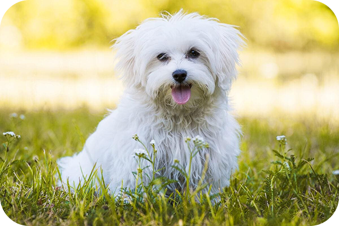
Idade: 3 anos
Raça: SRD
Cor: Preto
Personalidade: Fofa e teimosa
Canil Responsável: Canil Amor Animal
Idade: 2 anos
Raça: SRD
Cor: Marrom
Personalidade: Brincalhão e energético
Canil Responsável: Canil Vida Pet
Idade: 4 anos
Raça: SRD
Cor: Branco
Personalidade: Calma e carinhosa
Canil Responsável: Canil Patinhas Felizes
Idade: 5 anos
Raça: SRD
Cor: Cinza
Personalidade: Protetor e forte
Canil Responsável: Canil Guardiões Pet

Idade: 1 mês
Raça: SRD
Cor: Bege
Personalidade: Pequeno e curioso
Canil Responsável: Canil Pequenos Amigos
Idade: 3 anos
Raça: SRD
Cor: Preto e branco
Personalidade: Alegre e amigável
Canil Responsável: Canil Amor Animal
Idade: 2 anos
Raça: SRD
Cor: Caramelo
Personalidade: Carinhosa e dócil
Canil Responsável: Canil Vida Pet
Idade: 4 anos
Raça: SRD
Cor: Marrom escuro
Personalidade: Inteligente e curioso
Canil Responsável: Canil Patinhas Felizes
A vacinação é a melhor forma de proteger seu pet contra doenças graves como a raiva e a cinomose.
Ver maisA castração ajuda a prevenir doenças e evita abandono.
Ver maisProteja seu pet de parasitas internos.
Ver maisCheck-ups são fundamentais.
Ver maisPets também precisam de bem-estar emocional.
Ver maisOs pets ajudam no bem-estar humano.
Ver mais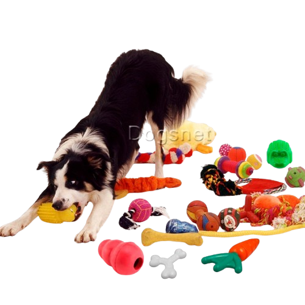
Brinquedos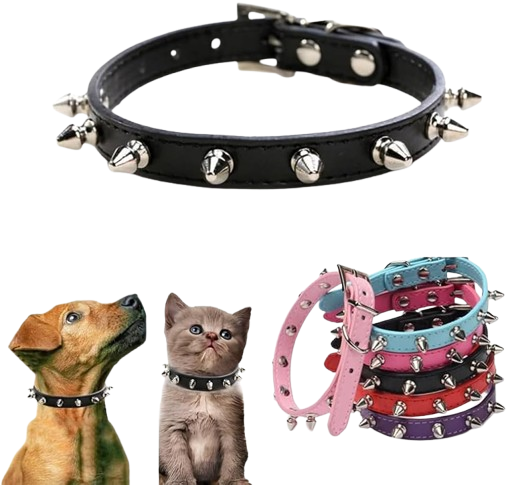
Coleira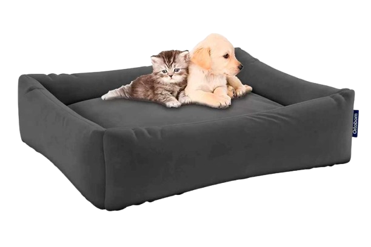
Caminha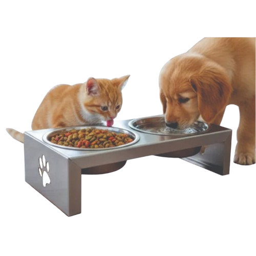
Potes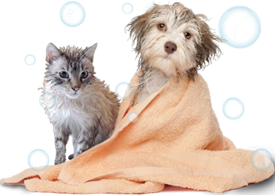
Banho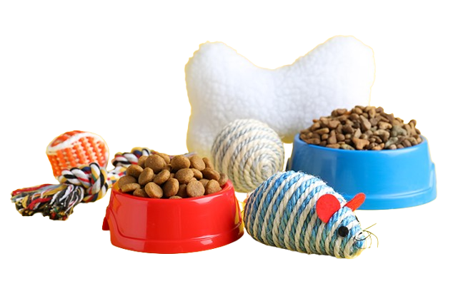
Comida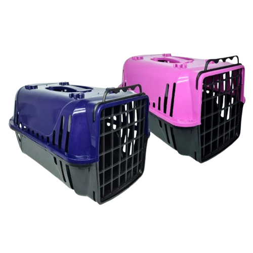
Caixa de Transporte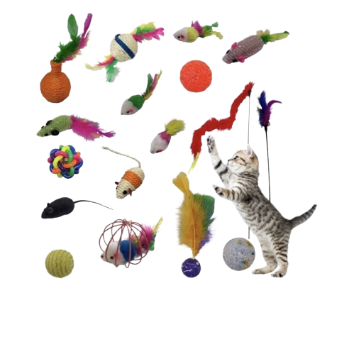
Brinquedos Gatos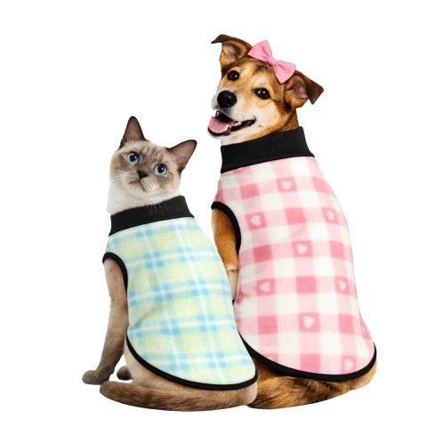
Roupas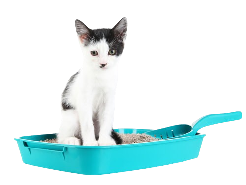
Caixa de Areia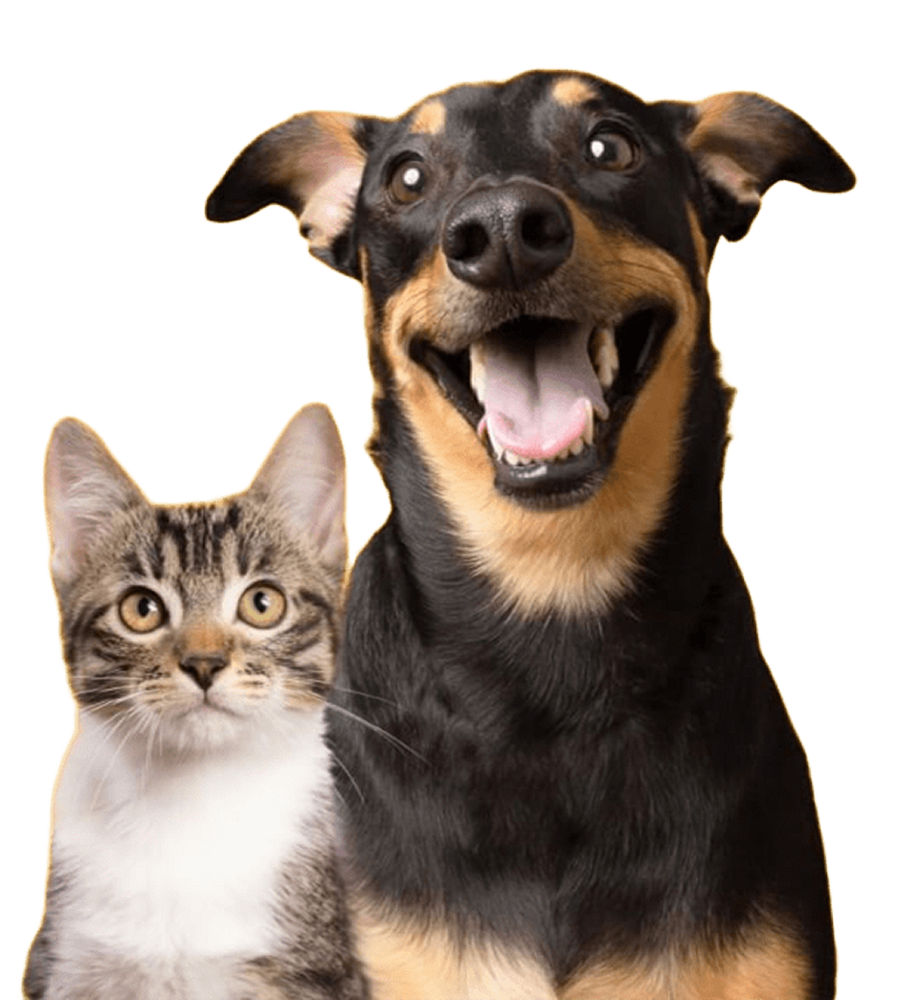